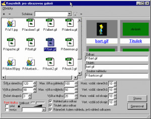
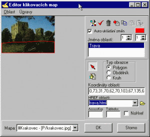
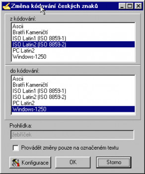
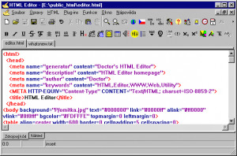

Podobných zahraničních editorů existuje celá řada, ale kvalitní český freewarový HTML editor naleznete
jen těžko. Pro mnoho tvůrců webových stránek může být právě české prostředí argumentem, proč si vybrat
právě tento editor. Doctor´s HTML EDITOR 3.0 je ryze český program pro tvorbu HTML stránek,
podporující velké množství tagů a parametrů. Má podporu PHP a XML. K dispozici je "Tag inspektor"
automaticky zobrazující prvky pro editaci parametrů aktuálního tagu, integrovaný editor klikacích map,
generátor obrazových galeriích, podpora CSS stylů atd.
Vzhled programu je tradiční, o něco chudší než u známějšího českého HTML editoru EasyPad. HTML zapisujete do "záložkových" dokumentů (v horní části se vám zobrazují jednotlivé stránky v záložkách a u každé stránky máte k dispozici v dolní části záložky Zdrojový kód a Náhled). Pokud si chcete otevřít více stránek, uspořádají se vám do záložek, a tak budete mít i lepší přístup pro případné doplňování. Pokud chcete změnit vzhled programu, můžete měnit uspořádání kliknutím na menu Okno na dlaždice, kaskády podobně jako u Windows 3.x. Možností, které vám program nabídne k usnadnění tvorby vaší webové stránky, je velké množství.
Zajímavou a užitečnou funkcí je "Definice automatického vkládání", kde si můžete nadefinovat vaši zkratku a po zadání se vámi nadefinovaný HTML kód zobrazí místo této zkratky. V menu HTML máte možnost jednoduše vložit do stránky některý z nadefinovaných tagů, dále můžete vkládat speciální znaky, obrázky (samozřejmostí je i okno výběru obrázku i s náhledem), parametry dokumentu - poměrně důležitá funkce; po jejím spuštění se vám zobrazí samostatné okno s možností nadefinovat například pozadí, text, titulek, popis, atd. a po vyplnění vám program vygeneruje požadovaný HTML kód. Program nabízí i tvorbu plug-inů. Program přináší i některé potřebné funkce: převod mezi číselnými soustavami (decimální, hexadecimální, binární a římská) a převod do jiné znakové sady (sadu musíte nainstalovat z adresáře Encs, který je přiložen k programu; po nainstalování budete moci převádět mezi: ASCII, Bratři Kameničtí, ISO Latin 1, ISO Latin 2, PC Latin 2 a Windows-1250) - tuto akci naleznete v menu Okno pod názvem "České kódování". Samozřejmostí je i nastavení prohlížeče pro náhled editovaného dokumentu. Doctor´s HTML EDITOR je určen pouze znalcům HTML kódu. Pokud nepožadujete po HTML editoru maximum, vyhovuje vám české prostředí a velikost programu, je Doctor´s HTML EDITOR správnou volbou.
Velikost instalačního souboru 650 kB. Systémové požadavky Win95/98/NT. Program je distribuován jako freeware.




| Licence | Freeware |
|---|---|
| Verze programu | 3.0 |
| Autor | Doctor |
| Potřeba instalace | ano |
| Domovská stránka | http://editor.2b.cz/ |
| Velikost souboru | 996,05 kB |
| Operační systém | Windows XP,Windows Vista,Windows 7,Windows 8 |
| Jazyk | Čeština |
| Poslední aktualizace | 7. 8. 2007 |
| Odkaz na stažení | https://www.stahuj.cz/vyvojove_nastroje/www-tvorba/ostatni_editory/html-editor/download/ |